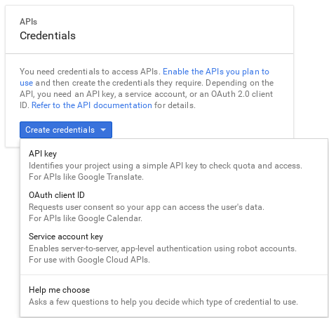
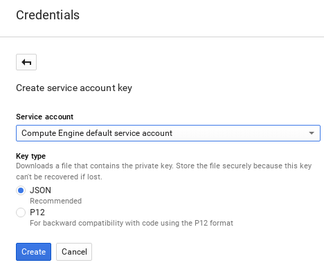
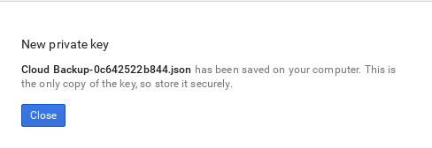

Block Storage Backup Guide
Understanding, using, and managing the Block Storage backup service in OpenStack
Abstract
Preface
Red Hat OpenStack Platform provides the foundation to build a private or public Infrastructure-as-a-Service (IaaS) cloud on top of Red Hat Enterprise Linux. It is a scalable, fault-tolerant platform for the development of cloud-enabled workloads.
You can manage most features of the backup service by using either the OpenStack dashboard or the command-line client methods, however you must use the command line to execute some of the more advanced procedures.
For the complete suite of documentation for Red Hat OpenStack Platform, see Red Hat OpenStack Platform Documentation.
Chapter 1. Overview
The Block Storage service (cinder) includes a horizontally scalable backup service that you can use to back up cinder volumes to diverse storage back ends. You can use the Block Storage backup service to create and restore full or incremental backups. The service is volume-array independent.
The Red Hat OpenStack Platform (RHOSP) director is a toolset to install and manage a complete RHOSP environment called the overcloud. For more information about director, see the Director Installation and Usage guide. The overcloud contains the components that provide services to end users, including Block Storage. The Block Storage backup service is an optional service that you deploy on Controller nodes.
1.1. Backups and snapshots
A volume backup is a persistent copy of the contents of a volume. Volume backups are typically created as object stores, and are managed through the OpenStack Object Storage service (swift) by default. You can use Red Hat Ceph and NFS as alternative back ends for backups.
When you create a volume backup, all of the backup metadata is stored in the Block Storage service database. The cinder-backup service uses this metadata when it restores a volume from the backup. This means that when you perform a recovery from a catastrophic database loss, you must restore the Block Storage service database first before you restore any volumes from backups, provided that the original volume backup metadata of the Block Storage service database is intact. If you want to configure only a subset of volume backups to survive a catastrophic database loss, you can also export the backup metadata. You can then re-import the metadata to the Block Storage database by using the REST API or the cinder client, and restore the volume backup as normal.
Volume backups are different from snapshots. Backups preserve the data contained in the volume, and snapshots preserve the state of a volume at a specific point in time. You cannot delete a volume if it has existing snapshots. Volume backups prevent data loss, whereas snapshots facilitate cloning. For this reason, snapshot back ends are typically colocated with volume back ends in order to minimize latency during cloning. By contrast, the backup repository is typically located separately from the back ends, either on a different node or different physical storage. This protects the backup repository from any damage that might occur to the volume back end.
For more information about volume snapshots, see Create, Use, or Delete Volume Snapshots in the Storage Guide.
1.2. How backups and restores work
The following subsections illustrate the workflows for backups and restores.
1.2.1. Volume backup workflow
When the Block Storage backup service performs a back up, it receives a request from the cinder API to back up a targeted volume. The backup service completes the request and stores the content on the back end.
The following diagram illustrates how the request interacts with the Block Storage (cinder) services to perform the backup.

- The client issues a request to back up a Block Storage volume by invoking the cinder API.
- The cinder API service receives the request from HAProxy and validates the request, the user credentials, and other information.
- Creates the backup record in the SQL database.
-
Makes an asynchronous RPC call to the
cinder-backupservice via AMQP to back up the volume. - Returns current backup record, with an ID, to the API caller.
- An RPC create message arrives on one of the backup services.
-
The
cinder-backupservice performs a synchronous RPC call toget_backup_device. -
The
cinder-volumeservice ensures that the correct device is returned to the caller. Normally, it is the same volume, but if the volume is in use, the service returns a temporary cloned volume or a temporary snapshot, depending on the configuration. -
The
cinder-backupservice issues another synchronous RPC tocinder-volumeto expose the source device. -
The
cinder-volumeservice exports and maps the source device (volume or snapshot) and returns the appropriate connection information. -
The
cinder-backupservice attaches source volume by using connection information. -
The
cinder-backupservice calls the backup driver, with the device already attached, which begins the data transfer to the backup destination. - The volume is detached from the Backup host.
-
The
cinder-backupservice issues a synchronous RPC tocinder-volumeto disconnect the source device. -
The
cinder-volumeservice unmaps and removes the export for the device. -
If a temporary volume or temporary snapshot was created,
cinder-backupcallscinder-volumeto remove it. -
The
cinder-volumeservice removes the temporary volume. - When the backup is completed, the backup record is updated in the database.
1.2.2. Volume restore workflow
The following diagram illustrates the steps that occur when a user requests to restore a Block Storage service (cinder) backup.
- The client issues a request to restore a Block Storage backup by invoking the CinderREST API.
- The cinder API receives the request from HAProxy and validates the request, the user credentials, and other information.
- If the request does not contain an existing volume as the destination, the API makes an asynchronous RPC call to create a new volume and polls the status of the volume until it becomes available.
-
The
cinder-schedulerselects a volume service and makes the RPC call to create the volume. -
Selected
cinder-volumeservice creates the volume. -
When
cinder-apidetects that the volume is available, the backup record is created in the database. - Makes an asynchronous RPC call to the backup service via AMQP to restore the backup.
- Returns the current volume ID, backup ID, and volume name to the API caller.
- An RPC create message arrives on one of the backup services.
-
The
cinder-backupservice performs a synchronous RPC call tocinder-volumeto expose the destination volume. -
The
cinder-volumeservice exports and maps the Destination Volume returning the appropriate connection information. -
The
cinder-backupservice attaches source volume using connection information. -
The
cinder-backupservice calls the driver with the device already attached, which begins the data restoration to the volume destination. - The volume is detached from the backup host.
-
The
cinder-backupservice issues a synchronous RPC tocinder-volumeto disconnect the source device. -
The
cinder-volumeservice unmaps and removes the export for the device. - When the backup is completed, the Backup record is updated in the database.
1.3. Cloud storage versus local storage
The Google Cloud Storage driver is the only cloud driver that is supported by the Block Storage backup service. By default, the Google Cloud Storage driver uses the least expensive storage solution, Nearline, for this type of backup.
Configure the backup service to optimize performance. For example, if you create backups from Europe, change the backup region to Europe. If you do not change the backup region from the default, US, the performance might be slower due to the geographical distance between the two regions.
Google Cloud Storage requires special configuration that is explained in section Appendix A, Google Cloud Storage configuration.
The following table lists the benefits and limitations of cloud storage and local storage based on the situation.
| Situation | Cloud storage | Local storage |
|---|---|---|
| Offsite backup | Cloud storage is in the data center of another company and is therefore automatically offsite. You can access data from many locations. Remote copy is available for disaster recovery. | Requires additional planning and expense. |
| Hardware control | Relies on the availability and expertise of another service. | You have complete control over storage hardware. Requires management and expertise. |
| Cost considerations | Different pricing policies or tiers depending upon the services you use from the vendor. | Adding additional hardware as needed is a known cost. |
| Network speed and data access | Overall data access is slower and requires Internet access. Speed and latency depend on multiple factors. | Access to data is fast and immediate. No internet access is required. |
Chapter 2. Block Storage backup service deployment
The Block Storage backup service is optional. It is not installed by default so you must add it to your overcloud deployment
Prerequisites
- An existing Red Hat OpenStack Platform (RHOSP) installation.
- An available storage source with a compatible backup driver: Object Storage (swift; default), Ceph, NFS, or Google Cloud storage.
Google Cloud Storage requires additional configuration. For more information, see Appendix A, Google Cloud Storage configuration.
2.1. Configuring back end storage options for the backup service
To enable the backup service, complete the following steps.
Procedure
Create a copy of the
cinder-backup.yamlfile, which is located in the/usr/share/openstack-tripleo-heat-templates/environments/directory, and store it in the same location as your other custom templates.cp /usr/share/openstack-tripleo-heat-templates/environments/cinder-backup.yaml /home/stack/templates/cinder-backup-settings.yaml
Your copy of the
cinder-backup.yamlfile contains default settings that configure an OpenStack Object Storage (swift) back end for the Block Storage backup service with Pacemaker. If this is the back end you are using for your backup then you do not need to make changes to this file. If you are using an alternative back end, configureparameter_defaultsdepending on the backup back end:If you are using Red Hat Ceph Storage, configure
parameter_defaultsin the following way:-
CinderBackupBackend: (Required)ceph -
CinderBackupRbdPoolName: (Optional) Set to a custom RBD pool name. Default:backups
-
If you are using NFS, configure
parameter_defaultsin the following way:-
CinderBackupBackend: (Required)nfs -
CinderBackupNfsShare: (Required) Set to the NFS share that you want to mount. The default value is empty. -
CinderBackupNfsOptions: (Optional) Set to your required mount option.
-
- Save the changes to the file.
To enable the backup service and apply this configuration, add your backup settings environment file to the stack with your other environment files and deploy the overcloud:
(undercloud) [stack@undercloud ~]$ openstack overcloud deploy --templates \ -e [your environment files] -e /home/stack/templates/cinder-backup-settings.yaml
For more information and additional configuration options, see Appendix A, Google Cloud Storage configuration.
2.2. Deploying the overcloud with your Google Cloud configuration
After you create the environment file in `/home/stack/templates/, deploy the overcloud then restart the cinder-backup service.
Procedure
-
Log in as the
stackuser. Deploy the configuration:
$ openstack overcloud deploy --templates \ -e /home/stack/templates/cinder-backup-settings.yaml
ImportantIf you passed any extra environment files when you created the overcloud, pass them again here using the
-eoption to avoid making undesired changes to the overcloud.-
Restart the
cinder-backupservice after the deployment finishes.
For more information, see the Including environment files in an overcloud deployment in the Director Installation and Usage guide and Environment Files in the Advanced Overcloud Customization guide.
Chapter 3. Using the Block Storage backup service
You can use the Block Storage backup service to perform full or incremental backups, and to restore a backup to a volume.
3.1. Full backups
3.1.1. Creating a full volume backup
To back up a volume, use the cinder backup-create command. By default, this command creates a full backup of the volume. If the volume has existing backups, you can choose to create an incremental backup instead. For more information, see Section 3.2.2, “Performing incremental backups”.
Prior to Red Hat OpenStack Platform version 16, the cinder backup-create command created incremental backups after the first full Ceph volume backup to a Ceph Storage back end. In RHOSP version 16 and later, you must use the --incremental option to create incremental volume backups. If the --incremental option is not used with the cinder backup-create command, the default setting creates full backups. For more information, see Section 3.2.2, “Performing incremental backups”.
You can create backups of volumes you have access to. This means that users with administrative privileges can back up any volume, regardless of owner. For more information, see Section 3.1.2, “Creating a volume backup as an admin”.
Procedure
View the ID or Display Name of the volume you want to back up:
# cinder list
Back up the volume:
# cinder backup-create _VOLUME_
Replace VOLUME with the
IDorDisplay Nameof the volume you want to back up. For example:+-----------+--------------------------------------+ | Property | Value | +-----------+--------------------------------------+ | id | e9d15fc7-eeae-4ca4-aa72-d52536dc551d | | name | None | | volume_id | 5f75430a-abff-4cc7-b74e-f808234fa6c5 | +-----------+--------------------------------------+
The
volume_idof the resulting backup is identical to the ID of the source volume.Verify that the volume backup creation is complete:
# cinder backup-list
-
The volume backup creation is complete when the
Statusof the backup entry is available.
3.1.2. Creating a volume backup as an admin
Users with administrative privileges can back up any volume managed by Red Hat OpenStack Platform. When an admin user backs up a volume that is owned by a non-admin user, the backup is hidden from the volume owner by default.
Procedure
As an admin user, you can use the following command to back up a volume and make the backup available to a specific tenant:
# cinder --os-auth-url <KEYSTONEURL> --os-tenant-name <TENANTNAME> --os-username <USERNAME> --os-password <PASSWD> backup-create <VOLUME>
Replace the following variables according to your environment requirements:
- <TENANTNAME> is the name of the tenant where you want to make the backup available.
- <USERNAME> and <PASSWD> are the username and password credentials of a user within <TENANTNAME>.
- <VOLUME> is the name or ID of the volume that you want to back up.
-
<KEYSTONEURL> is the URL endpoint of the Identity service, which is typically http://IP:5000/v2, where IP is the IP address of the Identity service host. When you perform this operation, the size of the resulting backup counts against the quota of
TENANTNAMErather than the quota of the tenant admin.
3.1.3. Exporting the metadata of a volume backup
You can export and store the metadata of a volume backup so that you can restore the volume backup even if the Block Storage database suffers a catastrophic loss.
Procedure
Run the following command:
# cinder backup-export _BACKUPID_
Replace <BACKUPID> with the ID or name of the volume backup:
+----------------+------------------------------------------+ | Property | Value | +----------------+------------------------------------------+ | backup_service | cinder.backup.drivers.swift | | backup_url | eyJzdGF0dXMiOiAiYXZhaWxhYmxlIiwgIm9iam...| | | ...4NS02ZmY4MzBhZWYwNWUiLCAic2l6ZSI6IDF9 | +----------------+------------------------------------------+
The volume backup metadata consists of the backup_service and backup_url values.
3.1.4. Backing up an in-use volume
You can create a backup of an in-use volume with the --force option when the Block Storage back end snapshot is supported.
To use the --force option, the Block Storage back end snapshot must be supported. You can verify snapshot support by checking the documentation for the back end that you are using.
By using the --force option, you acknowledge that you are not quiescing the drive before performing the backup. Using this method creates a crash-consistent, but not application-consistent, backup. This means that the backup does not have an awareness of which applications were running when the backup was performed. However, the data is intact.
Procedure
To create a backup of an in-use volume, run:
# cinder backup-create _VOLUME_ --incremental --force
3.1.5. Backing up a snapshot
You can create a full backup from a snapshot using the volume ID that is associated with the snapshot.
Procedure
Locate the snapshot ID of the snapshot to backup using
cinder snapshot list.# cinder snapshot-list --volume-id _VOLUME_ID_
If the snapshot is named, then you can use the following example to locate the
ID:# cinder snapshot-show _SNAPSHOT_NAME_
Create the backup of a snapshot:
# cinder backup-create _VOLUME_ --snapshot-id=_SNAPSHOT_ID_
3.2. Incremental backups
Using the Block Storage backup service, you can perform incremental backups.
3.2.1. Performance considerations
Some backup features like incremental and data compression can impact performance. Incremental backups have a performance impact because all of the data in a volume must be read and checksummed for both the full and each incremental backup.
You can use data compression with non-Ceph backends. Enabling data compression requires additional CPU power but uses less network bandwidth and storage space overall.
The multipathing configuration also impacts performance. If you attach multiple volumes without enabling multipathing, you might not be able to connect or have full network capabilities, which impacts performance.
You can use the advanced configuration options to enable or disable compression, define the number of processes, and add additional CPU resources. For more information, see Appendix B, Advanced Block Storage backup configuration options.
3.2.1.1. Impact of backing up from a snapshot
Some back ends support creating a backup from a snapshot. A driver that supports this feature can directly attach a snapshot, which is faster than cloning the snapshot into a volume to be able to attach to it. In general, this feature can affect performance because of the extra step of creating the volume from a snapshot.
3.2.2. Performing incremental backups
By default, the cinder backup-create command creates a full backup of a volume. However, if the volume has existing backups, you can create an incremental backup.
Incremental backups are fully supported on NFS, Object Storage (swift), and Red Hat Ceph Storage backup repositories.
An incremental backup captures any changes to the volume since the last full or incremental backup. Performing numerous, regular, full backups of a volume can become resource intensive because the size of the volume increases over time. With incremental backups, you can capture periodic changes to volumes and minimize resource usage.
Procedure
To create an incremental volume backup, use the
--incrementaloption with the following command:# cinder backup-create _VOLUME_ --incremental
Replace VOLUME with the
IDorDisplay Nameof the volume you want to back up.
You cannot delete a full backup if it already has an incremental backup. If a full backup has multiple incremental backups, you can only delete the latest one.
3.3. Canceling a backup
To cancel a backup, an administrator must request a force delete on the backup.
This operation is not supported if you use the Ceph or RBD back ends.
Procedure
Run the following command:
# openstack volume backup delete --force <backup>
After you complete the cancellation and the backup no longer appears in the backup listings, there can be a slight delay for the backup to be successfully canceled. To verify that the backup is successfully canceled, the backing-up status in the source resource stops.
Before Red Hat OpenStack version 12, the backing-up status was stored in the volume, even when backing up a snapshot. Therefore, when backing up a snapshot, any delete operation on the snapshot that followed a cancellation could result in an error if the snapshot was still mapped. In Red Hat OpenStack Platform version 13 and later, ongoing restoration operations can be canceled on any of the supported backup drivers.
3.4. Viewing and modifying tenant backup quota
Normally, you can use the dashboard to modify tenant storage quotas, for example, the number of volumes, volume storage, snapshots, or other operational limits that a tenant can have. However, the functionality to modify backup quotas with the dashboard is not yet available.
You must use the command-line interface to modify backup quotas.
Procedure
To view the storage quotas of a specific tenant (TENANT_ID), run the following command:
# cinder quota-show TENANT_ID
To update the maximum number of backups (MAXNUM) that can be created in a specific tenant, run the following command:
# cinder quota-update --backups MAXNUM TENANT_ID
To update the maximum total size of all backups (MAXGB) within a specific tenant, run the following command:
# cinder quota-update --backup-gigabytes MAXGB TENANT_ID
To view the storage quota usage of a specific tenant, run the following command:
# cinder quota-usage TENANT_ID
3.5. Restoring from backups
3.5.1. Restoring a volume from a backup
To create a new volume from a backup, complete the following steps.
Procedure
Find the ID of the volume backup you want to use:
# cinder backup-list
Ensure that the Volume ID matches the ID of the volume that you want to restore.
Restore the volume backup:
# cinder backup-restore _BACKUP_ID_
Replace BACKUP_ID with the ID of the volume backup you want to use.
If you no longer need the backup, delete it:
# cinder backup-delete _BACKUP_ID_
If you need to restore a backed up volume to a volume of a particular type, use the
--volumeoption to restore a backup to a specific volume:# cinder backup-restore _BACKUP_ID --volume VOLUME_ID_
NoteIf you restore a volume from an encrypted backup, then the destination volume type must also be encrypted.
3.5.2. Restoring a volume after a Block Storage database loss
When a Block Storage database loss occurs, you cannot restore a volume backup because the database contains metadata that the volume backup service requires. However, after you create the volume backup, you can export and store the metadata, which consists of backup_service and backup_url values, so that when a database loss occurs, you can restore the volume backup. For more information see Section 3.1.1, “Creating a full volume backup”).
If you exported and stored this metadata, then you can import it to a new Block Storage database, which allows you to restore the volume backup.
For incremental backups, you must import all exported data before you can restore one of the incremental backups.
Procedure
As a user with administrative privileges, run the following command:
# cinder backup-import _backup_service_ _backup_url_
Replace
backup_serviceandbackup_urlwith the metadata you exported. For example, using the exported metadata from Section 3.1.1, “Creating a full volume backup”:# cinder backup-import cinder.backup.drivers.swift eyJzdGF0dXMi...c2l6ZSI6IDF9 +----------+--------------------------------------+ | Property | Value | +----------+--------------------------------------+ | id | 77951e2f-4aff-4365-8c64-f833802eaa43 | | name | None | +----------+--------------------------------------+
- After you import the metadata into the Block Storage service database, you can restore the volume as normal, see Section 3.5.1, “Restoring a volume from a backup”.
3.5.3. Canceling a backup restore
To cancel a backup restore operation, alter the status of the backup to anything other than restoring. You can use the error state to minimize confusion regarding whether the restore was successful or not. Alternatively, you can change the value to available.
$ openstack volume backup set --state error BACKUP_ID
Backup cancellation is an asynchronous action, because the backup driver must detect the status change before it cancels the backup. When the status changes to available in the destination volume, the cancellation is complete.
This feature is not currently available on RBD backups.
If a restore operation is canceled after it starts, the destination volume is useless, because there is no way of knowing how much data, if any, was actually restored.
3.6. Troubleshooting
There are two common scenarios that cause many of the issues that occur with the backup service:
-
When the
cinder-backupservice starts, it connects to its configured backend and uses this as a target for backups. Problems with this connection can cause services to fail. - When backups are requested, the backup service connects to the volume service and attaches the requested volume. Problems with this connection are evident only during backup time.
In either case, the logs contain messages that describe the error.
For more information about log files and services, see Log Files for OpenStack Services in the Logging, Monitoring and Troubleshooting Guide.
For more general information about log locations, and troubleshooting suggestions, see Block Storage (cinder) Log Files in the Logging, Monitoring and Troubleshooting Guide.
3.6.1. Verifying services
You can diagnose many issues by verifying that services are available and by checking log files for error messages. For more information about the key services and their interactions, see Section 1.2, “How backups and restores work”.
After you verify the status of the services, check the cinder-backup.log file. The Block Storage Backup service log is located in /var/log/containers/cinder]/cinder-backup.log.
Procedure
Run the
cinder showcommand on the volume to see if it is stored by the host:# cinder show
Run the
cinder service-listcommand to view running services:# cinder service-list +------------------+--------------------+------+---------+-------+----------------------------+-----------------+ | Binary | Host | Zone | Status | State | Updated_at | Disabled Reason | +------------------+--------------------+------+---------+-------+----------------------------+-----------------+ | cinder-backup | hostgroup | nova | enabled | up | 2017-05-15T02:42:25.000000 | - | | cinder-scheduler | hostgroup | nova | enabled | up | 2017-05-15T02:42:25.000000 | - | | cinder-volume | hostgroup@sas-pool | nova | enabled | down | 2017-05-14T03:04:01.000000 | - | | cinder-volume | hostgroup@ssd-pool | nova | enabled | down | 2017-05-14T03:04:01.000000 | - | +------------------+--------------------+------+---------+-------+----------------------------+-----------------+
- Verify that the expected services are available.
3.6.2. Troubleshooting tips
Backups are asynchronous. The Block Storage backup service performs a small number of static checks upon receiving an API request, such as checking for an invalid volume reference (missing) or a volume that is in-use or attached to an instance. The in-use case requires you to use the --force option.
Using the --force option means that I/O is not be quiesced and the resulting volume image may be corrupt.
If the API accepts the request, the backup occurs in the background. Usually, the CLI returns immediately even if the backup fails or is approaching failure. You can query the status of a backup by using the cinder backup API. If an error occurs, review the logs to discover the cause.
3.6.3. Pacemaker
By default, Pacemaker deploys the Block Storage backup service. Pacemaker configures virtual IP addresses, containers, services, and other features as resources in a cluster to ensure that the defined set of OpenStack cluster resources are running and available. When a service or an entire node in a cluster fails, Pacemaker can restart the resource, take the node out of the cluster, or reboot the node. Requests to most services are through HAProxy
For information about how to use Pacemaker for troubleshooting, see Managing high availability services with Pacemaker in the High Availability Deployment and Usage guide.
Appendix A. Google Cloud Storage configuration
To configure the Block Storage service (cinder) to use Google Cloud Storage as a backup back end, complete the following procedures:
Create and download the service account credentials of your Google account:
Create an environment file to map the Block Storage settings that you require:
Re-deploy the overcloud with the environment file that you created:
Prerequisites
-
You have the username and password of an account with elevated privileges. You can use the
stackuser account that is created to deploy the overcloud. For more information, see the Director Installation and Usage guide. - You have a Google account with access to Google Cloud Platform. The Block Storage service uses this account to access and use Google Cloud to store backups.
A.1. Creating the GCS credentials file
The Block Storage service (cinder) requires your Google credentials to access and use Google Cloud for backups. You can provide these credentials to the Block Storage service by creating a service account key.
Procedure
- Log in to the Google developer console (http://console.developers.google.com) with your Google account.
Click the Credentials tab and select Service account key from the Create credentials drop-down menu.

In the Create service account key screen, select the service account that you want the Block Storage service to use from the Service account drop-down menu:

In the same screen, select JSON from the Key type section and click Create. The browser will then download the key to its default download location:

Open the file and note the value of the
project_idparameter:{ "type": "service_account", "project_id": "*cloud-backup-1370*", ...Save a copy of the GCS JSON credentials to
/home/stack/templates/Cloud-Backup.json- Important
-
Name the file
Cloud-Backup.jsonand do not change the file name. This JSON file must be in the same directory location as thecinder-backup-gcs.yamlfile that you create as part of the procedure in Section A.2, “Creatingcinder-backup-gcs.yaml”.
A.2. Creating cinder-backup-gcs.yaml
Using the example file provided, create the cinder-backup-gcs.yaml file.
The white space and format used in this the example (and in your file) are critical. If the white space is changed, then the file might not function as expected.
Procedure
Copy the text below, paste it into the new file. Do not make any modifications to the file contents.
heat_template_version: rocky description: > Post-deployment for configuration cinder-backup to GCS parameters: servers: type: json DeployIdentifier: type: string resources: CinderBackupGcsExtraConfig: type: OS::Heat::SoftwareConfig properties: group: script config: str_replace: template: | #!/bin/bash GCS_FILE=/var/lib/config-data/puppet-generated/cinder/etc/cinder/Cloud-Backup.json HOSTNAME=$(hostname -s) for NODE in $(hiera -c /etc/puppet/hiera.yaml cinder_backup_short_node_names | tr -d '[]",'); do if [ $NODE == $HOSTNAME ]; then cat <<EOF > $GCS_FILE GCS_JSON_DATA EOF chmod 0640 $GCS_FILE chown root:42407 $GCS_FILE fi done params: GCS_JSON_DATA: {get_file: Cloud-Backup.json} CinderBackupGcsDeployment: type: OS::Heat::SoftwareDeploymentGroup properties: servers: {get_param: servers} config: {get_resource: CinderBackupGcsExtraConfig} actions: ['CREATE','UPDATE'] input_values: deploy_identifier: {get_param: DeployIdentifier}-
Save the file as
/home/stack/templates/cinder-backup-gcs.yaml.
A.3. Creating the environment file with your Google Cloud settings
Create the environment file to contain the settings that you want to apply to the Block Storage service (cinder). In this case, the environment file configures the Block Storage service to store volume backups to Google Cloud. For more information about environment files, see the Director Installation and Usage guide.
Use the following example environment file and update the backup_gcs_project_id with the project ID that is listed in the Cloud-Backup.json file. You can also change the backup_gcs_bucket_location location from US to location that is closer to your location.
For a list of configuration options for the Google Cloud Backup Storage backup back end, see Table A.1, “Google Cloud Storage backup back end configuration options”.
Procedure
- Copy the environment file example below. Retain the white space usage.
-
Paste the content into a new file:
/home/stack/templates/cinder-backup-settings.yaml -
Change the value for
backup_gcs_project_idfromcloud-backup-1370to the project ID listed in theCloud-Backup.jsonfile. - Save the file.
Environment file example
Define each setting in the environment file. Use Table A.1, “Google Cloud Storage backup back end configuration options” to select the available configuration options.
resource_registry:
OS::TripleO::Services::CinderBackup: /usr/share/openstack-tripleo-heat-templates/deployment/cinder/cinder-backup-pacemaker-puppet.yaml
# For non-pcmk managed implementation
# OS::TripleO::Services::CinderBackup: /usr/share/openstack-tripleo-heat-templates/deployment/cinder/cinder-backup-container-puppet.yaml
OS::TripleO::NodeExtraConfigPost: /home/stack/templates/cinder-backup-gcs.yaml
parameter_defaults:
CinderBackupBackend: swift
ExtraConfig:
cinder::backup::swift::backup_driver: cinder.backup.drivers.gcs.GoogleBackupDriver
cinder::config::cinder_config:
DEFAULT/backup_gcs_credential_file:
value: /etc/cinder/Cloud-Backup.json
DEFAULT/backup_gcs_project_id:
value: cloud-backup-1370
DEFAULT/backup_gcs_bucket:
value: cinder-backup-gcs
DEFAULT/backup_gcs_bucket_location:
value: usTable A.1. Google Cloud Storage backup back end configuration options
| PARAM | Default | CONFIG Description |
|---|---|---|
|
|
Required. The project ID of the service account that you are using and that is included in the | |
|
| The absolute path to the service account key file that you created in Section A.1, “Creating the GCS credentials file”. | |
|
| The GCS bucket, or object storage repository, that you want to use, which might or might not exist. If you specify a non-existent bucket, the Google Cloud Storage backup driver creates one and assigns it the name that you specify here. For more information, see Buckets and Bucket name requirements. | |
|
|
|
The location of the GCS bucket. This value is used only if you specify a non-existent bucket in |
|
|
| The size, in bytes, of GCS backup objects. |
|
|
|
The size, in bytes, that changes are tracked for incremental backups. This value must be a multiple of the |
|
|
| The HTTP user-agent string for the GCS API. |
|
|
| GCS objects are downloaded in chunks of this size, in bytes. |
|
|
| GCS objects are uploaded in chunks of this size, in bytes. To upload files as a single chunk instead, use the value -1. |
|
|
| Number of retries to attempt. |
|
|
|
Storage class of the GCS bucket. This value is used only if you specify a non-existent bucket in |
|
|
| List of GCS error codes. |
|
|
| Boolean to enable or disable the timer for sending periodic progress notifications to the Telemetry service (ceilometer) during volume backups. This is enabled by default (True). |
When you create new buckets, Google Cloud Storage charges based on the storage class that you choose (backup_gcs_storage_class). The default NEARLINE class is appropriate for backup services.
You cannot edit the location or class of a bucket after you create it. For more information, see Managing a bucket’s storage class or location.
A.4. Deploying the overcloud
When you have created the environment file file in /home/stack/templates/, deploy the overcloud then restart the cinder-backup service:
Procedure
-
Log in as the
stackuser. Deploy the configuration:
$ openstack overcloud deploy --templates \ -e /home/stack/templates/cinder-backup-settings.yaml
ImportantIf you passed any extra environment files when you created the overcloud, pass them again here using the -e option to avoid making undesired changes to the overcloud.
- Restart the cinder-backup service after the deployment finishes.
For more information, see the Including Environment Files in Overcloud Creation in the Director Installation and Usage Guide and the Environment Files section of the Advanced Overcloud Customization Guide.
Appendix B. Advanced Block Storage backup configuration options
Before director-deployed installations, the cinder.conf file configured the Block Storage service and the backup service. When a value from cinder.conf does not have an orchestration (heat) template equivalent, you can use a custom environment file to pass values to the director. Add the values to an ExtraConfig section in the parameter_defaults section of a custom environment file, for example, the cinder-backup-settings.yaml file.
With ExtraConfig, you can add additional hiera configuration to inject into the cluster on all nodes. These settings are included on a dedicated backup node. However, if you used ControllerExtraConfig instead of ExtraConfig, your settings are installed on Controller nodes and not on a dedicated backup node.
You can substitute DEFAULT/[cinder.conf setting]` for the setting from the DEFAULT section of the cinder.conf file. The following example shows how the ExtraConfig entries appear in a YAML file:
parameter_defaults:
ExtraConfig:
cinder::config::cinder_config:
DEFAULT/backup_compression_algorithm:
value: NoneTable B.1 lists backup-related sample options.
Table B.1. Block Storage backup service configuration options
| Option | Type | Default value | Description |
|---|---|---|---|
| backup_service_inithost_offload | Optional | True | Offload pending backup delete during backup service startup. If false, the backup service remains down until all pending backups are deleted. |
| use_multipath_for_image_xfer | Optional | False | Attach volumes using multipath, if available, during backup and restore procedures. This affects all cinder attach operations, such as create volume from image, generic cold migrations, and other operations. |
| num_volume_device_scan_tries | Optional | 3 | The maximum number of times to rescan targets to find volumes during attach. |
| backup_workers | Optional | 1 | Number of backup processes to run. Running multiple concurrent backups or restores with compression results in significant performance gains. |
| backup_native_threads_pool_size | Optional | 60 | Size of the native threads pool for the backups. Most backup drivers rely heavily on this. You can decrease the value for specific drivers that do not rely on this option. |
| backup_share | Required | Set to HOST:_EXPORT_PATH_. | |
| backup_container | Optional | None | (String) Custom directory to use for backups. |
| backup_enable_progress_timer | Optional | True | Enable (true) or disable (false) the timer to send the periodic progress notifications to the Telemetry service (ceilometer) when backing up the volume to the backend storage. |
| backup_mount_options | Optional | Comma-separated list of options that you can specify when you mount the NFS export that is specified in backup_share. | |
| backup_mount_point_base | Optional | $state_path/backup_mount | (String) Base directory that contains mount point for NFS share. |
| backup_compression_algorithm | Optional | zlib | The compression algorithm that you want to use when you send backup data to the repository. Valid values are zlib, bz2, and None. |
| backup_file_size | Optional | 1999994880 | Data from cinder volumes that are larger than this value are stored as multiple files in the backup repository. This option must be a multiple of backup_sha_block_size_bytes. |
| backup_sha_block_size_bytes | Optional | 32768 | Size of cinder volume blocks for digital signature calculation |